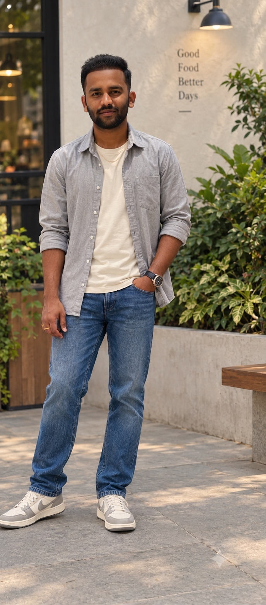

GROW WITH INTENTIONMake your
next move.
next move.
AdStark
A digital presence for a growth-focused brand, built around a clear message and a confident visual system.
View source ↗Hey, I'm Praneeth. I like turning ideas into websites that look good, feel intuitive, and actually work. Usually, you'll find me tweaking the little details or building something new.
Take a look
Small collection, real projects.
Open a repository to see the details.
A digital presence for a growth-focused brand, built around a clear message and a confident visual system.
View source ↗A banking application exploring account flows, transaction handling, and a straightforward interface for everyday actions.
View source ↗A jewelry storefront concept with a product-led layout and a softer, editorial visual direction.
View source ↗A music discovery interface concept designed to make browsing by mood and listening interests feel inviting.
View source ↗Loading repositories from GitHub...
*Technology labels and descriptions should be checked against each repository's current implementation. Project artwork above is an illustrative CSS-built preview, not a live-site screenshot.
I like the space where design decisions meet real implementation.
That means paying attention to the small things — how a page reads, how a component behaves, whether an interaction makes sense, and whether the code is understandable when I return to it later.
I'm building my practice through hands-on projects, learning by making, testing, and refining instead of chasing trends for their own sake.
More on GitHub ↗A working list, not a leaderboard.
Specific tools vary by project.
HTML · CSS · JavaScript
Python · Flask · SQLite
Git · GitHub · Responsive UI
01 Make it clear before making it clever.
02 Build for people, not just screenshots.
03 Keep the code readable and the details considered.